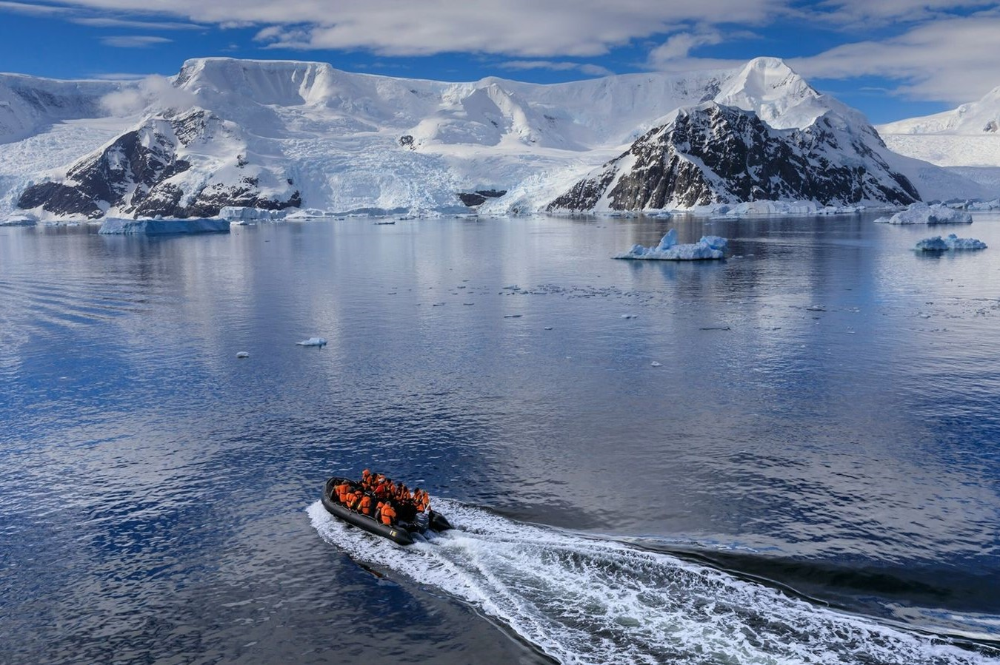

Un dos grandes incentivos para viaxar a Antártida é poder observar a súa fauna: preservada polo Tratado
Antártico, este territorio acolle algunhas das especies más extraordinarias do mundo, como a foca de Weddell
e o pingüino emperador.
A Antártida, tamén chamada o continente antártico, é un dos lugares, por non dicir o que máis, fríos e xeados de
todo o globo terráqueo. Está situada completamente no hemisferio sur, casi enteramente ao sur do círculo polar
antártico e está rodeada
polo océano Antártico. Conten o polo sur xeográfico, polo que de manera coloquial e por extensión tamén é
coécida como o polo
sur. Con 14 000 000 km², é o cuarto continente máis grande despois de Asia, América e África. En comparación
con Oceanía, a Antártida é casi dúas veces o seu tamaño. Ao arredor do 98 % da Antártida está cuberta de
xeo, que ten un promedio de 1,9 km de espesor.
A Antártida, de promedio, é o continente máis frío, seco e ventoso, e ten a altitude media máis alta de todos
os continentes. A Antártida é un deserto de xeo, con precipitacións anuais de só 200 mm na zona
costera e moito menos terra adentro. A temperatura na Antártida ha tido alcanzado os -89,2 °C, inda que a
media do terceiro trimestre (a época máis fría do ano) é de -63 °C. Hacia 2016, había ao redor de 135
residentes permanentes, pero nas estacions de investigación dispersas en todo o continente residen entre
1000 y 5000 persoas durante todo o ano. Os organismos nativos da Antártida inclúen moitos tipos de algas,
bacterias, hongos, plantas, protistas, e certos animais, tales como ácaros, nematodos, pingüinos, pinnípedos e
tardígrados. O tipo de vexetación que se presenta nalgunhas zonas reducidas é a tundra.
La Antártida é unha parte realmente importante do noso planeta. Existen diversas leis a nivel mundial que
prohíben as actividades militares e a extracción de minerais, prohíbe as explosions nucleares e a
eliminación de residuos nucleares, apoya a investigación científica, e protexe a ecozona en todo o continente.
Encóntranse en curso varios experimentos levados a cabo por máis de 4000 científicos de diversas nacionalidades.